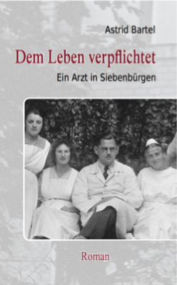

Christoph Hartmann, ein gebürtiger Hermannstädter,
meldet sich im Ersten Weltkrieg freiwillig an die Front. Es
ist die österreichisch-ungarische Armee, in die er
eintritt, denn Hermannstadt gehört wie ganz Siebenbürgen zu
Österreich-Ungarn. Kurz vor dem Fronturlaub fällt sein
Freund und Hartmann kann dessen Verlobter nur noch den
Verlobungsring zurückbringen.
Nach dem verlorenen Krieg muss Österreich-Ungarn Siebenbürgen an Rumänien abtreten - Hartmann hat zu diesem Zeitpunkt gerade sein Medizinstudium an der ungarischen Universität begonnen. Fortan wird er hin und her gerissen sein zwischen seiner siebenbürgischen Heimatstadt und den wechselnden Orten, an denen er seinem Berufsziel, Arzt zu werden, näher kommen kann.
Als er nach seiner Promotion nach Hermannstadt zurückkehrt, begegnet er Josephine. Es ist die große Liebe, für beide gleichermaßen.
Aber ihr Glück ist nur von kurzer Dauer. Josephine erkrankt an Tuberkulose und verbringt mehr Zeit im Sanatorium in Davos als zu Hause mit ihrem Mann.
Als der Zweite Weltkrieg ausbricht und Rumänien sich Hitler-Deutschland anschließt, muss auch Hartmann wieder an die Front. Um seiner kranken Frau beistehen zu können, wird er vom Dienst freigestellt, doch es hilft alles nichts. Josephine erliegt ihrem Leiden. Hartmann droht den Halt zu verlieren. Zwar tritt eine neue Frau an seine Seite, doch sie kann ihm den großen Verlust kaum ersetzen.
Mit dem Ende des Krieges brechen für die Siebenbürger Sachsen noch keine besseren Zeiten an, im Gegenteil. Tausende werden zur Zwangsarbeit nach Russland deportiert. Als 1947 nach dem Sturz des Königs die Rumänische Volksrepublik ausgerufen wird, beginnen die Enteignungen. Bald steht Hartmann vor der Entscheidung: Soll er der Heimat oder der Freiheit den Vorzug geben?
Roman nach dem wahren Leben eines siebenbürgischen Frauenarztes
Bestellinformation:
ISBN 978-3-8448-0306-8 (broschiert) 14.90 EuroISBN 973-3-8448-1358-6 (gebunden) 24.90 Euro
Bestellbar in jeder Buchhandlung und bei Amazon